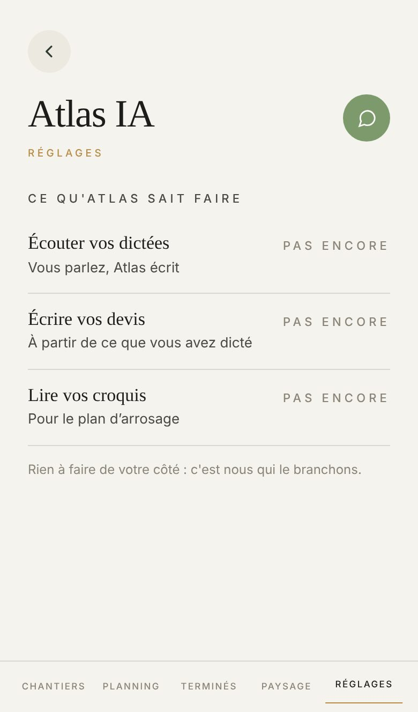

Proposé
Aujourd'hui

Ce qui change
- Proposé montre votre écran à vous : les clés sont posées, Atlas écoute, écrit et lit. La capture d'Aujourd'hui dit « Pas encore » parce que le poste qui l'a prise n'a pas de clé.
- Les trois choses qu'Atlas sait faire gardent leurs mots. Chacune a son dessin (le micro, le crayon, la photo) et son état en couleur : Oui sur une pastille verte, Pas encore en gris. Plus de capitales espacées.
- « Rien à faire de votre côté : c'est nous qui le branchons. » passe sur une plage bleue, en 15 px au lieu de 12 px gris.
- Votre détail d'éditeur tient dans une plage : qui écoute, qui rédige, qui regarde les photos, et ce qui part chez chacun. La phrase du sous-traitant, dite trois fois aujourd'hui, ne se dit qu'une.
- Mon vocabulaire s'ouvre dans le même téléphone : touchez sa ligne. L'ajout en haut, un mot ou une règle ; puis vos règles et vos mots, chacun avec ce qu'Atlas doit en faire, marqué d'une étincelle d'or.
- Un mot mis de côté le dit en toutes lettres, au lieu de seulement pâlir. Touchez « Remettre en service ».
- Une demi-phrase part en tête de Mon vocabulaire : « pour qu'Atlas comprenne du premier coup au lieu qu'on le rattrape après ».
Ce qui ne bouge pas
- « Pas encore », jamais « non ». Oui seulement quand un vrai prestataire répond : touchez « Pas encore branché ».
- Le détail et Mon vocabulaire ne s'ouvrent qu'à vous, l'éditeur. Un artisan client voit les trois lignes, rien d'autre : touchez « Branché, chez un client ».
- Les clés ne s'affichent jamais, seulement les noms des prestataires.
- Quand rien n'est branché chez l'éditeur, son détail garde ses mots (« Mode déterministe, aucun prestataire branché », « Posez OPENAI_API_KEY… »).
- Un salarié qui tape l'adresse lit à qui la page appartient.
À trancher
- « Lire vos croquis, pour le plan d'arrosage » en dit moins qu'Atlas n'en fait : le même branchement lit aussi le ticket de caisse photographié et la plante malade du diagnostic. Écrire « Lire vos photos », avec dessous « Croquis, ticket, plante malade » ?